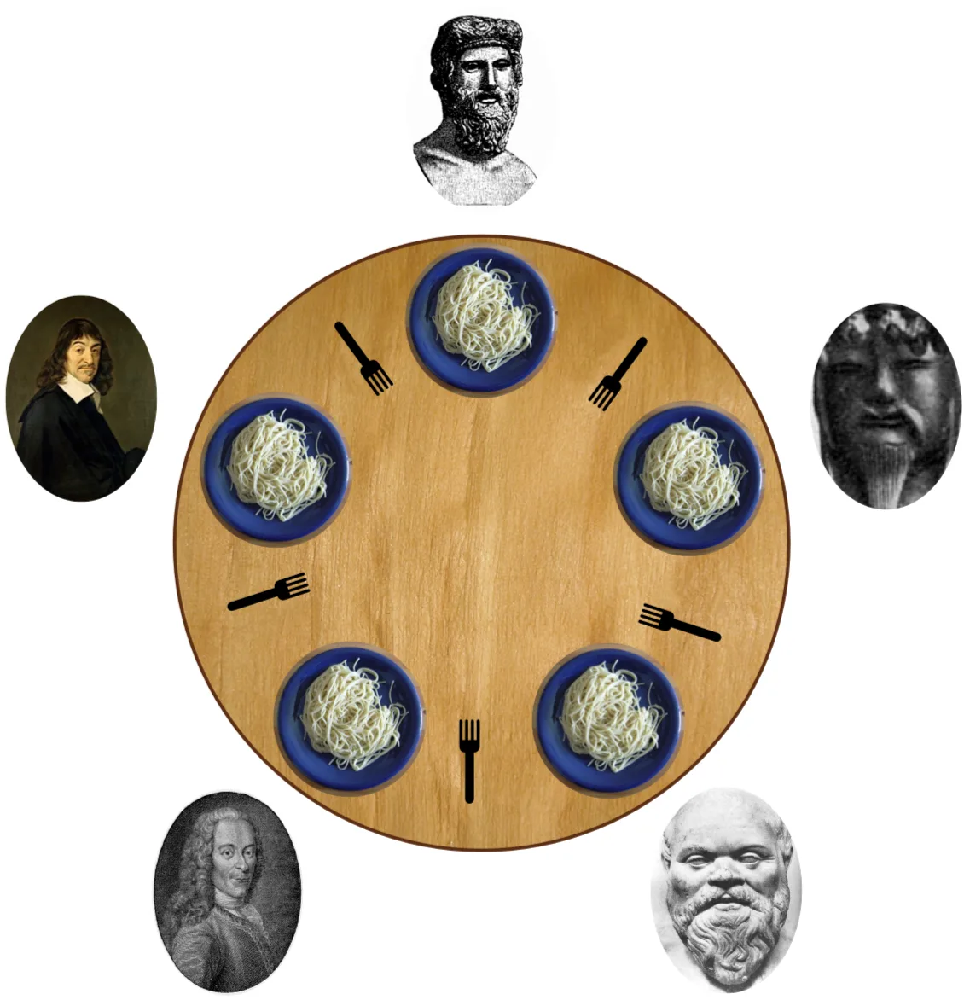
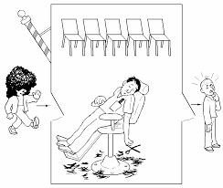

La programmazione concorrente gestisce più processi che girano contemporaneamente condividendo risorse. I rischi principali sono: race condition, deadlock, starvation e inconsistenza dei dati. Per studiarli sono stati definiti quattro problemi classici.
1. Produttore e Consumatore
Un produttore inserisce dati in un buffer condiviso, un consumatore li preleva. Il rischio è scrivere su un buffer pieno o leggere da uno vuoto. Modella situazioni reali come code di stampa e pipeline di dati.

2. Lettori e Scrittori
Più processi accedono a una risorsa condivisa (es. database): i lettori possono farlo contemporaneamente, gli scrittori no — devono avere accesso esclusivo. Il problema è bilanciare le priorità senza causare starvation.
3. Filosofi a Cena
Cinque filosofi condividono cinque bacchette: per mangiare ognuno ne ha bisogno di due. Se tutti prendono una bacchetta e aspettano l'altra si verifica deadlock. È il modello classico della competizione su risorse multiple.

4. Barbiere Sonnolento
Un barbiere serve un cliente alla volta; se non ci sono clienti dorme, se le sedie d'attesa sono piene il cliente va via. Il problema è sincronizzare correttamente l'accesso alla sala d'attesa. Modella sistemi di accodamento come call center e server.